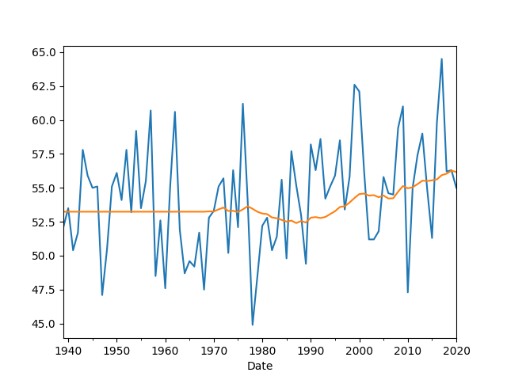
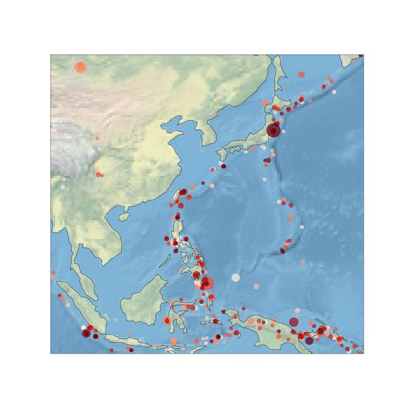

Week 7
Former Oz PM Rudd, talking abt Murdoch monopoly
"Nicolas [Brahy] will join the hydrogen infrastructure fund initiative ...which intends to play a critical role in the context of the European Green Deal and the climate activities of the European Union. Many Member States have already earmarked more than 45 billion Euros in their respective national hydrogen strategies. Public funding will need to be blended with private investment in order to guarantee long term market structures. Nicolas is perfectly suited to boost the investment activities and will integrate his broad knowledge into the acceleration of hydrogen development"
Daleep Singh; sanction guy. Considered for both as NSC and NEC deputy..? US preparing to inflict some damage on some autocrats, rogoue states?
Nice location, saw in one scifi show, Widgeon Slough, Vancouver is it?
The Guardian: "Uber drivers are workers, UK supreme court rules"
"@BakerHugh
People never lie so much as after a hunt, during a war or before an election --- Otto von Bismarck"
This gets better and better. Went awol, lied about why, then left pet home alone
This guy cant catch a break. All self-inflicted of course.
"Flyin Lyin Ted" 🤣 🤣 🤣
"[Lithium, element required for batteries] extraction process requires 500,000 gallons of water per metric ton of lithium, harms the soil and causes air contamination"
"The main objective of the HyCARE project is the development of a prototype hydrogen storage tank with use of a solid-state hydrogen carrier on large scale"
Last but not least, @ENGIELabCRIGEN! @ENGIELabCRIGEN will host soon the @HycareP demonstration plant!
— HyCARE Project (@HycareP) February 15, 2021
Watch&share 👇👇👍👍#hydrogen #renewables #hydrogenstorage@dipchim @FBK_research @HZG_de @CNRS @GKNPowderMetal @ife_norway #tecnodelta #StühffGmbH pic.twitter.com/9JiodLpBd3
Follow list upkeep.. Sometimes I reverse-engineer from content to person. If good share does not show up on my feed, Ill find someone who shared it, if person not a punk (it is socmed) I'll add the follow.
This is already known, see link; "life’s simpler building blocks are so prevalent in the universe that molecules from space may have seeded life on earth itself".
"We hope to confirm life is not unique to Earth"
Funny.. but also true for other democracies post Berlin Wall.
Mitterand: "The French center is neither left nor left"
Extraordinary view of the Myanmar protests pic.twitter.com/0wd7cNygf2
— ian bremmer (@ianbremmer) February 18, 2021
Im worried I’m not in enough group chats.
— Molly Jong-Fast🏡 (@MollyJongFast) February 19, 2021
"@chrislhayes
I'll admit that I kind of lost track of this, but I was genuinely surprised to learn in the last few days that Americans can just fly to Mexico and then fly right back with no mandatory quarantine in the midst of a once-in-a-century global pandemic"
Also see below
"The United States went to war in Vietnam for multiple reasons but the basic reason was Charles De Gaulle. The American strategy at the time was to contain the Soviet Union with a string of alliances swinging from Norway all the way through [Vietnam], and blocked them through expanding [alliances]. Charles de Gaulle came along and said "you can't trust the americans because if they ever attacked the Americans wouldn't come ... you you're going to be left alone we have to form our own NATO independent of the United States". During the Vietnam War there's a word that became incredibly important credibility. Credibility meant that how credible were the American guarantees to this all-important structure of containment, how credible was it that we would come to Germany's aid, or Japan's aid with everything we had, if they were a war. And a terrible fear that time was that these people would lose confidence in us. So part of the reason we went to Vietnam had nothing to do with Vietnam the fear was that if we didn't go to Vietnam our credibility with our other allies would be gone and the entire American strategy will collapse on that basis. There was no expectation [we would end up with] 50,000 dead, on that basis the expectation was that we would go into a small police action we may win it, we may lose it, but the Germans would know that our guarantee means something"
Why did LBJ escalate the Vietnam conflict? He saw the alternative as appeasement. Costly decision.
"@MaraHvistendahl
SCOOP: The Oracle TikTok deal was supposed to prevent TikTok from passing data to Chinese police. Turns out Oracle has been marketing its own data analytics software to...Chinese police"
"Democrats plan big Medicaid expansion in Covid aid package"
"@jensstoltenberg
Ministers decided to expand @IraqNato mission to support local forces in their fight against terrorism. We'll increase from 500 to around 4000 personnel & include more security institutions & areas. #NATO's mission will continue in full consultation with #Iraq's government"
"The Absurd Electric Bills Slamming Texans"
The Atlantic: "The lower 48 U.S. states are divided into two big electrical grids—except for Texas, which maintains its own independent system. (Small, outlying parts of the state belong to the big grids.) The state maintains a separate grid to avoid having to comply with federal regulation. If Texas had been connected to the broader national grid, the state might have been able to borrow power that would have filled the hole left when large parts of the system failed in this storm: As demand for energy for heating surged, power plants went offline, equipment froze, and wind turbines froze too. Instead, Texas has experienced staggering blackouts"
With a quarter share of the input, how likely is that wind energy brought major part of the state's power system to a halt? #frozenwindmill
Biden: "Nobody should go to jail for a drug offense. No one should go to jail for the use of a drug. They should go to drug rehabilitation."
Europe pulls ahead in race for hydrogen, as global project pipeline grows
CNBC: "A subsidiary of multinational building materials firm Heidelberg Cement is working with researchers from Swansea University to install and operate a green hydrogen demonstration unit at a site in the U.K."
"Australians outraged after Facebook blocks news to protest revenue-sharing law"
"@josheidelson
California fines McDonald's franchisee for firing 4 workers who raised Covid-19 issues, went on strike, & filed health complaints"
Forbes: "In July 2020, Microsoft tested hydrogen fuel cells for backup power at its data centers. This move aligns with its commitment to be carbon negative by 2030 and eliminate dependency on diesel fuel by 2030. While still in the exploratory stages of using fuel cells as backup generators, the company hopes to scale the 250 kW system to a 3 MW system, which is equivalent to diesel-powered generators currently at its data centers...
When comparing levelized costs for a completely resilient, 100% renewable data center with zero emissions, hydrogen is 119 dollar/MWh, while batteries could be over 4,000 dollar/MWh to ensure 48 hours of backup power [.. from Jack Brouwer, a professor of mechanical and aerospace engineering at the University of California, Irvine]"
Yes. And inflation is a major risk for bonds / treasuries, the pricing of which reflects the market's perception of future inflation, and indirectly growth (growth => rising wages => more money in circulation, inflation).
"Inflation will also affect interest rate levels. The higher the inflation rate, the more interest rates are likely to rise. This occurs because lenders will demand higher interest rates as compensation for the decrease in purchasing power of the money they are paid in the future"
"@TheEIU
#Taiwan was the biggest winner in this year's Democracy Index, climbing 20 places up the global rankings and gaining 'full democracy' status"
"@nytopinion
'The fear of inflation has become a greater threat to the American economy than inflation itself,' @BCAppelbaum writes"
Tempeh drumsticks? 😶 No
Like to have some tofurkey with that? 🤣
Pea protein? Sounds like pee protein!
AFAIK Goog agreed to a deal with Oz. But FB wants to rockn'roll?
"Facebook blocks Australian users from viewing or sharing news.. It comes in response to a proposed law that would force the company to pay publishers for content"
People Power
BBC: "Keith Gill, known as 'Roaring Kitty' on YouTube, allegedly duped retail investors into buying inflated stocks while hiding his sophisticated financial background"
Automation is mostly abt mechatronics, control theory, robotics.. eg the famous Boston Dynamics robots.. none of them require so-called "AI" as in nnets trained with gazillions of data.
Automation can do wonders.
"Manufacturing Robots Speed Wind Farm Construction... Denmark has long been a world leader when it comes to renewable energy. In 2019, the country set a new record by sourcing a massive 47% of its electricity consumption from wind power alone. Today, manufacturing robots from Danish company Odico are set to revolutionize this pioneering industry even further"
Bloomberg NEF Interview
BNEF Summit 2021: Firestarter - Cleaning Aviation, H2
Paul Eremenko, Co-Founder & CEO, Universal Hydrogen Company
Alejandro Zamorano-Cadavid, Specialist, Intelligent Mobility, BloombergNEF
Wind turbine freezing was not the main factor then..
"@GregAbbott_TX
The Texas power grid has not been compromised.
The ability of some companies that generate the power has been frozen.
This includes the natural gas & coal generators.
They are working to get generation back on line"
Dude. Lumber futures..
Business Insider: "This hydrogen paste has a similar range to that of gasoline and could revolutionize the transport industry"
"@byHeatherLong
26 states had revenue declines last year The toll was felt by both Dem & Repub-led states Gov't jobs cuts have occurred in nearly every state
26% NH
17% Colorado
14% Ohio
13% Wisconsin
12% Michigan
12% Maine
12% Kentucky"
"Say Hy to the home of the future"
Name any city and that'll be plotted too. I can do this all day.. let's go buddy.
import pandas as pd
df = pd.read_csv('austin-feb.csv')
df.Date = pd.to_datetime(df.Date,format="%Y%m")
df = df.set_index('Date')
df.Value.plot()
df['Trend'] = df.Value.rolling(window=30).mean()
df['Trend'] = df['Trend'].fillna(method='backfill')
df.Trend.plot()
plt.savefig('austin-feb.png')

Nice try genius. See above. Plotted February averages for Austin, TX per year, since 1940. The trend is up.
"Aw man the weather is cold in TX, that means no glob warming"
Tax havens: ... Ankara must share its banking data with the Member States of the European Union by the end of June, otherwise it will be placed on a “black list”.
"@StateDeptSpox
The Houthis’ assault on Marib shows they are not committed to peace or to ending a war afflicting the people of Yemen"
FuelCell Energy’s baseload power solutions deliver grid reliability with efficient and clean energy in the most extreme weather conditions. No wind, no sun, no problem. FuelCell Energy, always on. Stay powered. Stay warm. Stay safe. @ERCOT_ISO https://t.co/bcUxkClecA
— FuelCell Energy (@FuelCell_Energy) February 15, 2021
They apparently installed a remote access software so system could be controlled from anywhere... But if something is accessible, connected to the Net, hackers can also access
They need to take that shite off the Internet.
"Hacker tries to poison water supply of Florida city"
If an area as large as Texas was covered with panels today, it would provide ample energy, twice of what is required actually, for the entire world.
Colonization fine for other things, not urgent for energy.
"If we run out of solar panel space on Earth, should we colonize space for sunlight (through Stanford torus / O'Neil cylinder)"
MUST-WATCH: Prime Minister @BorisJohnson confirms UK will be "putting a big bet on #hydrogen" @KwasiKwarteng @annietrev @ASollowayUK @grahamstuart @grantshapps @redditchrachel @JacobYoungMP @Alex_Stafford @Jesse_Norman @samuelhall0 @griffitha @GregClarkMP @darrenpjones pic.twitter.com/jgKppXExeS
— UK Hydrogen Strategy Now (@UKHydrogenNow) February 14, 2021
Any gov trusting their regulatory pizzazz should think again. VW emission cheat happened under gov which wasnt known for widespread incomp, done by a company from a country associated with ordnung.
As policy megawatt scale of this tech to be used at a few power plants is fine, easy to regulate. End-user level, no. Much harder to control, and if reg is flaunted, side effects would be severe.
End-user gets the renewable fuel, ditto for pipelines.
"Bloom also intends to complete work on technology capable of capturing and extracting carbon from the emissions of its natural-gas-powered fuel cells. The company is 'working very hard to demonstrate' the ability to combine 'blue hydrogen' production, or turning methane into hydrogen and capturing the carbon emissions, with electricity production"
You have to watch for these tech types.. even when they're scaring you, they might be selling you. Like 'be scared of AI, boo!', the indirect message being it is that good. U see.. ? Then seque into 'i've got some of that same tech that for your house, for your lawnmower'.. (but no worries i had my people write it, and im the caution guy here, so be afraid for other stuff but not my shit, and buy it, quick!)'. So sad.. and bunk.
Some earthquake plotting.. EQ of past 90 days, old to new is colored light to dark, circle width is severity. The hope was maybe seeing a geo progression of eq culminating with a final big one at the end.. Always looking for an angle here..
But Japan surely gets a lot of quakes
Retrieval code
import cartopy.crs as ccrs, cartopy
import requests, time, datetime
def get_eq1():
today = datetime.datetime.now()
days = 90
start = today - datetime.timedelta(days=days)
req = 'https://earthquake.usgs.gov/fdsnws'
req+='/event/1/query.geojson?starttime=%s&endtime=%s'
req+='&minmagnitude=4.5&orderby=time&limit=1000'
req = req % (start.isoformat(), today.isoformat())
qr = requests.get(req).json()
res = []
for i in range(len(qr['features'])):
lat = qr['features'][i]['geometry']['coordinates'][1]
lon = qr['features'][i]['geometry']['coordinates'][0]
rad = qr['features'][i]['geometry']['coordinates'][2]
d = datetime.datetime.fromtimestamp(qr['features'][i]['properties']['time']/1000.0)
s = np.float(qr['features'][i]['properties']['mag'])
diff = (d-start).days
res.append([d,s,lat,lon,rad,diff])
import pandas as pd
df = pd.DataFrame(res).sort_values(by=0)
df = df.set_index(0)
df.columns = ['mag','lat','lon','rad','ago']
return df
df = get_eq1()
fig = plt.figure(figsize=(20, 20))
ax = fig.add_subplot(1, 1, 1, projection=ccrs.PlateCarree())
ax.set_global()
ax.stock_img()
ax.coastlines()
ago = np.max(df.ago)-df.ago
s = np.power(3,df.mag)
ax.scatter(df.lon, df.lat, c=df.ago, \
cmap=plt.cm.Reds, s=s, alpha=0.7, \
transform=ccrs.PlateCarree())
ax.set_extent([94, 161, -10, 54], crs=ccrs.PlateCarree())
plt.savefig('eq.png')

Forbes: "Hyzon, A Hydrogen Fuel Cell Truck Maker, In SPAC Deal Valued At $2.6 Billion"
"Hydrogen pumping stations are all over California and could be in the Denver metro area by the end of this year. "
"The H-Factor" 👍
"In a grand, clean energy strategy published in mid-December, a brain trust of cross-sector Canadian savants predicted that hydrogen-powered locomotion—already nicknamed “hydrail”—would be ready for testing some time about 2025, first in the form of yard switchers, short-leashed to their refueling stations.
The very next day, Dec. 18, Canadian Pacific (CP) smashed that timeline, and woke the North American rail industry"
Chick Korea RIP. Through him we got to know the craziest drummer ever, Dave Weckl.
Dadamnphreaknoizphunk - "Chemical Funk" #music
Some early Zack Snyder buzz, on the Justice League recut (?) (soon to be released). In trailer has a character say "we live in a society", apparently a meme now come alive, ppl loving it. Meme based on
.. then became a Joker thing, now Zack has a char voice it
It's good.. keeping the fans happy. I hope new JL pans out.
Average surface elevation of Earth is 840 meters... most know "sea level" is not actually zero elevation level.. The real bottom is at the bottom of some the sea, ocean.. And there is a lota ocean!
We all live on mountain tops IOW
Newton, other early modern phy computed all the time. It's fine to go off in an abstract direction but most phy teaching by default must be enmeshed with computation.
Landau wrote some fantastic books. Id listen to him.
Landau: "There can be little argument that computation has become an essential element in all areas of physics, be it via simulation, symbolic manipulations, data manipulations, equipment interfacing... [E]ven though the style of teaching and organization of subjects being taught by physics departments have changed in recent times, the actual content of the courses has been slow to incorporate the new-found importance of computation. Yes, there are now speciality courses and many textbooks in Computational Physics, but that is not the same thing as incorporating computation into the very heart of a modern physics curriculum so that the physics being taught today more closely resembles the physics being done today"
Creator is more likely
"Which is likely? Creator or not?"
By turning something into a process, we dont automatically remove "an omnipotent creator" from the picture. Everyone likes the invention of evolution. "God did not create the final thing, it was an evolutionary process". Boom. Darwin is world famous.
"Well now let's apply that to the universe".. thought some? "God did not make it happen, it started from a small seed, turned into everything we see"
Except the creator isnt exactly removed from the picture, ie the most enthusiastic supporters of Big Bang were and are the Clergy. That one one focused, 'big' creational event must have jelled more with their view of the creator.
But an omnipo being can bring stuff into existence, close to what they are now, just as easily as some magic process that will evolve stuff into as they are now. Dont want to assume either way, what I am saying is opting for long-running process just to remove the Big Guy is not necessarily more scientific.
We are pleased to join a public and corporate initiative for developing a #European hub for #green #fuels in Denmark’s Trekantomraadet. Everfuel’s #HySynergy project in Fredericia is a leading facility in the hub and planning for its Phase II expansion is well underway. pic.twitter.com/LGJkh1BRyD
— Everfuel (@EverfuelEU) February 12, 2021
BBC: "China refused to hand over key data to the World Health Organization (WHO) team investigating the origins of Covid-19, one of its members has said"
Rep senators did not want the politicking trouble.. vote on evidence wld cause a convict. Now the spin can favor DJT
"Donald Trump cleared by US Senate of inciting Capitol riots"
Soon after prev quake tweet, > 7.0 shake. Two of them.

Thanks to content like The Mandalorian I bet..
"Disney returns to profit as streaming business offsets theme park losses"
💧 Develop 5GW of low carbon hydrogen production capacity by 2030
— Kwasi Kwarteng (@KwasiKwarteng) February 12, 2021
🏘️ First town powered entirely by hydrogen by 2030
Read the full plan 👉🏾 https://t.co/QCJdAjTjSd pic.twitter.com/3Pp6AOQjXK
"You said this was indo. Smell like outdo" :)
Daam
"France wades into the South China Sea with a nuclear attack submarine"
Pute fussing over this one guy hurts gov legitimacy. Makes it difficult for democracies to deal with RU.
"Russia says it's ready to end ties with the European Union"
There are so many things to compute. Fantastic models out there that actually demo stuff, connected to physical processes. No need to wank off to weirdo bullshit.
"India and China begin troop pull back from disputed border area"
They have to care, there is a whole song and dance around creation of particles, formation of heavier elements since the "beginning of time", if that story is poppycock, then a major part of their assumption is wrong.
"Particle physicists dont care, they dont deal with that stuff"
Jacobin: "It’s Long Past Time to Abolish the Filibuster"
We know fluids of similar attributes even in the same canister stick together.
It is fascinating to see this at a large scale. Oceanic scale. The Atlantic and the Pacific do not mix.
{kind=link}
I was told during their conflict, RU media played this video on a loop. That's Saakashvili, the then GE president
Strategically it makes sense to want to be depended upon by bigger players, as an energy exporter, so next time maybe they wont get their ass kicked that swiftly by Russia.
Quick term expl; they will use water (hydro) in a dam, let through turbines to generate power. Green. How to store that power? H2; again green (and hydro).
Hydropower to hydrogen.. It rhymes! Go Georgia.